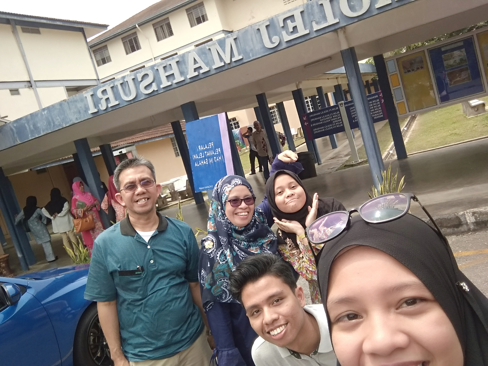

Traveling to Japan
Exhaustingly ecstatic, Aug 18, 2019

Being interested in Japanese culture almost all my life.
I'd never dreamt of being able to travel to Japan, it was certainly an unforgettable experience to be able to traverse around Tokyo all week. The humidness of Japanese summer, the exhaustion of walking around all day using public transports, and my awkward attempts of speaking Japanese is certainly vivid in my memories.
I made it to Uni!
Hopeful Optimism, Jul 14, 2018
Entering uni was a bitter sweet experience.
After SPM in 2017, entering 2018 began with failures and frustrations. Looking at my UPU results was heartbreaking but as they say "every cloud has a silver lining", as anxious and confused I am studying in a faraway place I also felt hopeful that it would give me opportunities I never thought I had.